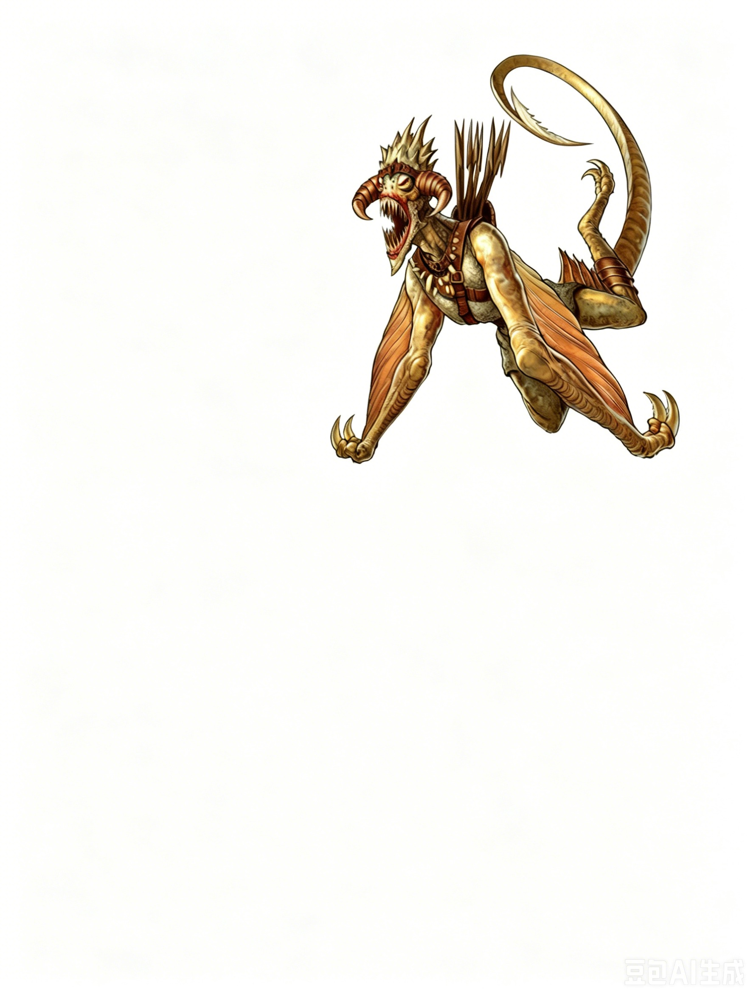

大型异界生物（跨位面） | 挑战级数 4一只肌肉发达、四肢修长的生物挥动着覆盖着皮革般膜翼的翅膀，在空中强力穿行。其细长的尾巴犹如利刃般延伸，扫荡着身后。翅膀末端的短骨刃仿佛在抓挠无形的猎物。其狭长的头颅上点缀着节瘤状的角状突起，嘴中满是锋利的牙齿。它身穿锁子甲，背后斜挂着一袋标枪。
风镰 ―― 始终混乱邪恶。
| 生命骰 | 8d8+16（52HP） |
| 先攻 | +1 |
| 速度 | 10 英尺，飞行 60 英尺（普通） |
| 防御等级 | 18，接触 10，措手不及 17 |
| 基本攻击/擒抱 | 视职业而定 |
| 近战攻击 | 2次爪击 +12 (1d6+5，18�C20/×3重击) 和 1次啮咬 +7 (1d8+2) |
| 远程攻击 | 标枪 +9 (1d6+5) |
| 占据/触及 | 5 英尺 / 5 英尺 |
| 特殊攻击 | 强化重击 (Augmented Critical)，致命重击 (Fearsome Critical)，撕裂 (Rend 2d6+7) |
| 特殊能力 | 黑暗视觉 60 英尺，锐利感官 (Keen Senses) |
| 豁免 | 强韧 +8，反射 +7，意志 +6 |
| 属性 | 力量 21，敏捷 12，体质 14，智力 9，感知 11，魅力 8 |
| 技能 | 攀爬 +21，威吓 +9，知识 (位面) +10，聆听 +10，潜行 +9，侦查 +10，生存 +10 (异位面 +12) |
| 专长 | 盔甲擅长 (轻甲)，飞越，盘旋 |
| 语言 | 风之歌 (Windsong)，风族语 (Auran) |
| 装备 | 链甲衫，3根标枪 |
锐利感官 (Keen Senses, Su)：如风刃兽。
强化重击 (Augmented Critical, Su)：风镰的爪子极为锋利，自然攻击掷出 18�C20 即可威胁重击，成功重击时造成三倍伤害。风镰的爪子不会受到如“锐锋术”这样的效果进一步提升威胁范围的影响。
致命重击 (Fearsome Critical, Su)：如风刃兽，意志豁免 DC 13。
撕裂 (Rend, Ex)：如风刃兽，造成 2d6+7 伤害。
风镰是风刃族的战士、贵族、暴君和牧师。这些粗暴、嗜血的生物对生肉有着贪婪的渴望，凭借一种如皇家般的威严在其领域内翱翔。与其他风刃族一样，风镰由屠杀之神厄瑞斯努创造，它们的使命是尽情满足主神的暴虐欲望，在任何可能的地方传播死亡与恐惧。
“......在狂风肆虐的深渊中，危险重重，其中最致命的莫过于随风而来的利刃。它们以极大的狂热狩猎与杀戮，用无形的刀刃切割一切；若需召唤它们，请务必谨慎......”
――摘自《论召唤术》
风镰 (Windscythe) 是狡诈的杀手，愿意使用任何策略来实现目标，无论是单独狩猎还是率领风刃兽 (Windrazor) 群行动。
1. 风镰的最爱战术是利用飞越 (Flyby Attack) 穿过敌人群体，试图通过其“致命重击” (Fearsome Critical) 能力让对手陷入恐惧。它会反复使用这一策略，直到敌人分散开来，然后选择其中孤立的目标，用爪击或撕咬进行攻击。
2. 如果多只风镰协同作战，它们会加速敌人分散的过程，并集中攻击孤立的目标――通常优先攻击法术施放者。
3. 当与风刃兽联合作战时，风镰会让这些体型较小的同伴冲在前方，作为先锋部队，或引导敌人进入有利的地形，以便风镰实施切割攻击。
风刃兽通常以小队形式狩猎，有时由风镰或侍奉厄瑞斯努的恶魔领队。它们也可能被派遣至物质位面，守护厄瑞斯努的神庙，与凡人牧师、熊地精、巨魔以及其他邪恶生物为伴。最常见的遭遇是风刃兽群体袭击。
风镰很少独自行动，因为它们深知群体作战的威力远胜单打独斗。它们通常带着至少两只风刃兽作为护卫，并经常与其他侍奉厄瑞斯努的生物同行，这也是它们进入物质位面的主要途径。
1. 风刃兽双人组（EL 2）：
风刃兽弗瓦尔（Fuuar）和图亚芬（Thuafin）是受派往物质位面的侦察兵，服从于一位强大的熊地精萨满。它们对野蛮的主人缺乏敬意，大部分时间都远离熊地精营地。冒险者可能会在它们侦察时遭遇它们，或因熊地精部族的劫掠而被引入它们的活动区域。
2. 风刃兽飞袭（EL 4）：
风刃兽苏鲁什（Surrussh）、弗利斯特（Fllist）、胡沃尔（Hwool）和鲁鲁鲁（Luluru）正在为风镰首领进行猎杀活动。它们更青睐快速移动的猎物，以增加捕猎的趣味性。
3. 护卫队（EL 4+）：
风刃兽有时会作为护卫陪同其他侍奉屠杀之神的仆从。
EL 4: 风刃兽图鲁什（Thurush）和莉莎（Lishae）被厄瑞斯努牧师召唤至物质位面，为名为卡马瑟丁（Kamatherdin）的夸赛魔鬼护航。夸赛魔鬼携带重要信息，速度极快且能隐身，若遇袭会抛弃风刃兽护卫以争取逃脱。
4. 孤独的风镰（EL 4）：
赫拉尔（Hurrall）是一只勇敢的年轻风镰，为证明自己的勇气离开族群独自行事。几天未归的孤独使它越发焦虑，极度渴望攻击并杀死任何遇见的目标。
5. 突袭（EL 8+）：
风镰常与其他混乱残暴的生物联合，尤其是那些允许它们自由进行空袭的盟友。
EL 8: 两只风镰和两只巨魔驻扎在一个隐藏于大城市下水道中的厄瑞斯努神殿。他们的突袭队穿越六个家庭后，冒险者才被警报吸引前来应对。
6. 屠杀（EL 10+）：
风镰乐于与屠杀之神的信徒一同行动，作为快速打击部队。
EL 10: 四只风镰、两只巨魔和一名5级熊地精牧师在一个毫无防备的村庄发起突袭，留下满目疮痍。被毁的村庄成为疾病的温床，邻近社区深受其害，忧心忡忡。
生态：风刃族 (Windblades) 将整个狂风深渊 (Pandemonium) 视为自己的领域，并会积极追捕入侵者――无论是被放逐者（如被困在狂风深渊中的类人生物、地精或巨人），还是试图占据深渊某些领地的史拉蟾 (slaadi) 或恶魔。
环境：风刃族居住的隧道和洞穴是阴森、黑暗的地方，狂风深渊的风声在那里永不停歇。偶尔，风会侵蚀周围的石壁，形成一些小的死胡同，这些地方便成了风刃族的居所。
典型体貌特征：
风刃兽 (Windrazors)：身高介于 3 到 3 英尺 10 英寸之间，体重在 38 到 52 磅之间。虽然所有风刃兽都有角状突起，但雄性的角数量多达四个，而雌性则只有两个。
风镰 (Windscythes)：身高介于 10 到 12 英尺之间，体重为 550 到 800 磅。它们的尾巴长度额外增加了 10 到 12 英尺。两性都有贯穿整个头骨的角状突起，角的数量越多表明其年龄越大。
阵营：风刃族始终是混乱邪恶的体现，它们的使命是以暴力的屠杀和残酷的折磨满足自己的天性。